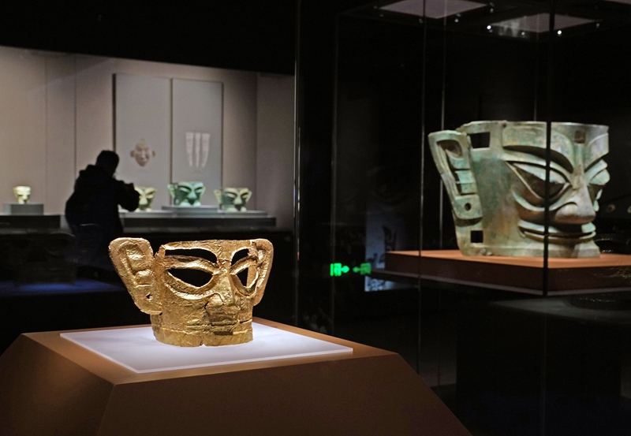
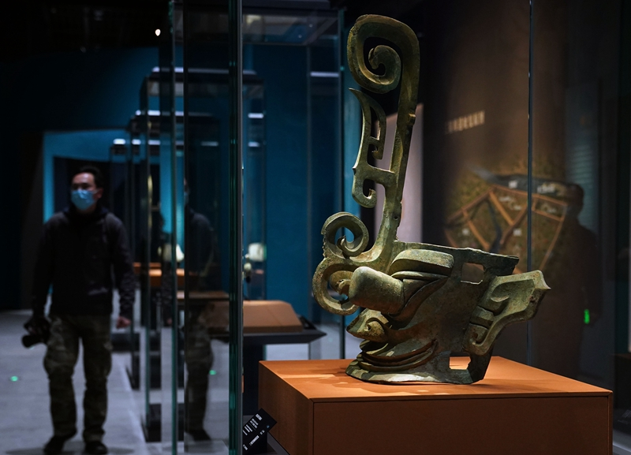
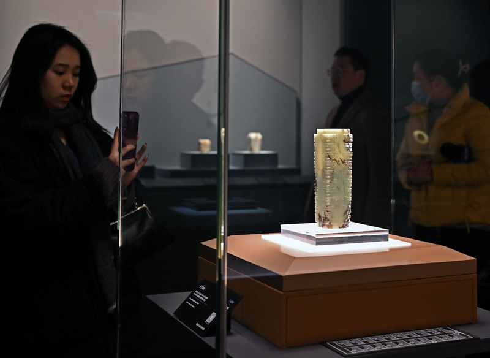
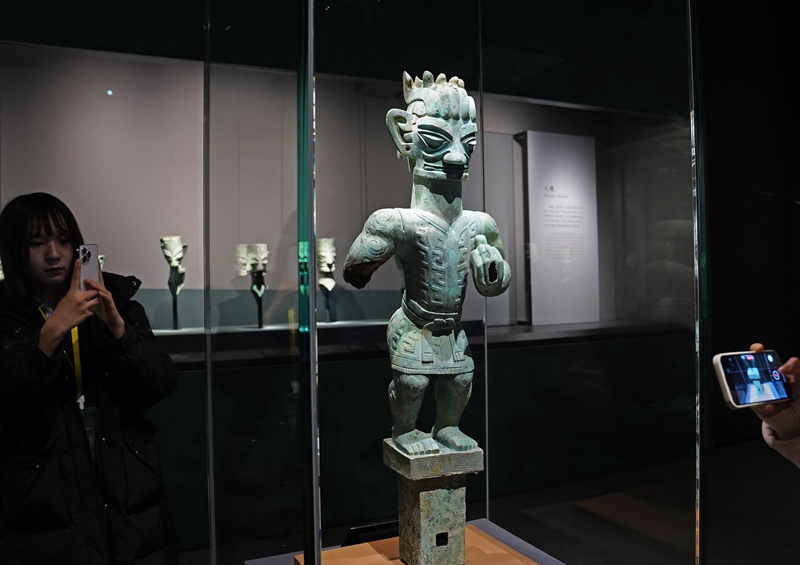

三千年古蜀文明，一座城的前世今生
广汉市位于"天府之国"成都平原腹心地带，南距省会成都市区19公里，北距德阳市城区19公里，是成都的"北大门"。广汉古称雒城、汉州，因"广至汉水"而得名，自古就有"益州门户、蜀省要衢、通京孔道"之说。
这里是三星堆文明的发源地，沉睡数千年、一醒惊天下，被誉为"长江文明之源"。从青铜神树到人面鸟身雕像，古蜀先民用非凡的想象力和创造力构筑起他们的"飞天"梦想。
今天的广汉，既是沉淀千年的历史博物馆，更是充满温度的生活剧场。这里守护着古蜀文明的根脉，也以一道道美食慰藉着当代人的胃与心。

三星堆——长江文明之源，世界第九大奇迹

金面具是目前三星堆出土最完整的金面具之一，青铜大面具是已知世界范围内体量最大的大型青铜面具

造型奇特神秘，是三星堆文明的代表性文物，展现了古蜀先民非凡的想象力

精美玉器，体现了古蜀文明高超的玉石加工技艺

独特的造型展现了古蜀人的形象特征和审美观念
这里有穿越时空的文化厚度，也有最鲜活的人间烟火
从三星堆青铜的璀璨光芒，到连山回锅肉的锅气升腾
非遗美食，片张薄大如手掌，肥而不腻，瘦而化渣，加入炸锅魁别具风味
传统手工艺，用细绳从颈部缠至后腿，味香浓郁，咸香适宜
"敢为天下鲜"，从宰杀到上桌最快仅需1小时，鲜香嫩脆
省级非遗项目，面条细如发丝，气味浓香，制作技艺精湛
全国最大火锅食材基地，年产值167亿元，80%火锅牛油产自广汉
三百年的民俗传承，华夏民俗一绝
源于清代康熙年间，历经三百余年传承。家长为孩子寻找"保保"（干爹），寓意"百年长寿、百病不生、百事顺遂"。2007年被列入四川省非物质文化遗产名录。
以真人大秀融汇声光电、新媒体技术手段，"复刻"古籍经典、"再现"古蜀礼乐，是广汉春节期间最隆重的祭祀祈福活动。
每年春季，连山镇万亩桃花盛开，桃红李白，素有"花果山"之美誉，吸引众多游客踏青赏花，形成独具特色的桃花盛会。
广汉坝区万亩油菜花竞相绽放，金黄色的花海与远处的雪山、近处的村庄构成一幅美丽的田园画卷。
自古就是"蜀省要衢，通京孔道"，现代立体交通四通八达
西成客专、宝成铁路、成兰铁路横贯南北，三星堆站直达成都仅需20分钟。接驳成都地铁的市域铁路S11线正在建设中。
京昆高速、成都二绕、108国道等国省干道穿境而过，天府大道北延线建成通车，1小时可达成都各区。
天府国际机场、成都双流机场、绵阳南郊机场均在广汉70公里半径范围内，国内外航线通达全球。
地处成都平原腹心，南距成都19公里，北距德阳19公里，是成都"北大门"